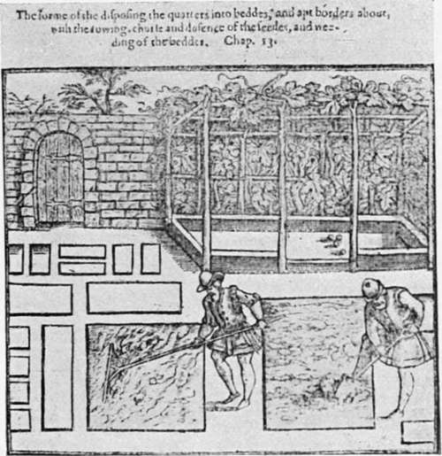

Early Tudor Gardens. Part 6
Description
This section is from the book "A History Of Gardening In England", by Alicia Amherst. Also available from Amazon: A History Of Gardening In England.
Early Tudor Gardens. Part 6
The greatest addition to the number of cultivated fruits was the apricot, which was certainly introduced before the middle of the sixteenth century, probably by Henry the Eighth's gardener, Wolf, about 1524. Turner mentions it in both his works under Malus Armeniaca, and gives Abrecok, or Abricok, as the English name, though he maintains that " an hasty peche is a better and a fitter name for it. But so that the tre be well knowen, I pase not gretely what name it is knowen by." The reason he gives for his name, is that the fruit ripens so much earlier than the peach. The word apricot implies the same idea, being derived from the Latin prcecoqua, or prcecocca. He says, in 1548, " We have very fewe of these trees as yet," and in 1551, "I have sene many trees of thys kynde in Almany, and som in England." In the beautiful old garden at Littlecote, in Berkshire, there are two apricot trees which still bear fruit, supposed to have been planted when the tree was first introduced into this country.
Tusser, 1573, gives a list of fruits to be set or removed in January, and it includes Apricots, or Apricocks, as he calls them.
The following is his list:—
1. Apple trees of all sorts.
2. Apricocks.
3. Barberies.
4. Boollesse, black and white.
5. Cheries, red and black.
6. Chestnuts.
7. Cornet plums.*
8. Damsens, white and black.
9. Filbeards, red and white.
10. Goose beries.
* = cornel plum = cornel cherries.
11. Grapes, white and red.
12. Greene or grasse plums. 13. Hurtillberies.*
14. Medlars or marles.
15. Mulberie.
16. Peaches, white and red.
17. Peares of all sorts.
18. Perare plums,† black and yellow.
19. Quince trees.
20. Respis.
21. Reisons.
22. Small nuts.
23. Strawberies, red and white.
24. Seruice trees.
25. Walnuts.
26. Wardens, white and red.
27. Wheat plums.
28. Now set ye may the box and bay, Haithorne and prim, for clothes trim.
From gardener's labyrinth.
We cannot prove that red currants had a place in gardens before this time, as they are never mentioned as such; even Gerard, in 1597, does not give them under that name, but describes them as a very small kind of gooseberry without "prickles," of a perfect red colour. But it seems that some sort of currant is intended by "Reisons." in this list.
* = whortleberries. † = pear-plum.
Tusser goes on in December's husbandrie to describe how the trees should be planted in the orchard :—
" Good fruit and good plentie doth well in the loft then make thee an orchard and cherish it oft:
For plant or for stock laie aforehand to cast but set or remoove it er Christmas be past.
Set one fro other full fortie foote wide to stand as he stood is a part of his pride".
We do not find many other changes in the orchards. Wardens still held a prominent place among pears, and costards among apples. The peach had not improved. Turner speaks of trees abroad, and goes on to say, " The peche is no great tre in England that I could se—the apples are soft and flesshy when they are rype something hory without." Among the Privy Purse expenses of Henry VIII., Mr. Long's gardener is specially mentioned as giving a present of peaches to the King, who at various other times received gifts of cherries, apples, pears, wardens, quinces, medlars, damsons, filberts, and melons.
It was only the large landowners who indulged in a garden specially set apart for flowers and pleasure. The garden of every small manor and farm-house in the kingdom was essentially for use. Fitzherbert, in his Book of Husbandry, 1534, enumerates the general duties of a wife, among which he does not forget the garden: "And in the beginning of March or a lyttel afore, is tyme for a wife to make her garden, and to gette as many good sedes and herbes as be good for the potte and to eate, and as ofte as nede shall requyre, it must be weded, for els wedes wyl ouergrowe the herbes." These herbs were much the same as in the previous century, but a few are mentioned in writings of this date, which have not appeared on earlier lists, such as asparagus, melons, taragon, horse-radish, and artichokes, which are first introduced about this date, and grown in the royal gardens. Tusser devotes several lines in his poem to beans and peas. In January—
" Good gardiner mine Make garden fine Set garden pease and beans, if ye please".
And again, " Dig garden, stroy* mallow, now may ye at ease And set (as a dainte) thy runciuall pease".
Also "Sowe pease (good trull † ) the moone past full Stick bows a rowe where runciuals growe." "Set plentie of bows among runciuall pease to climber thereon, and to branch at their ease".
These quotations show that runcival peas were a favourite dainty. They were a large kind of pea, and the name is supposed to be derived from Roncesvalles, in the Pyrenees. Tusser also gives directions for picking beans—
" Not rent off, but cut off ripe beane with a knife For hindering stalke of hir vegetive life So gather the lowest, and leauing the top Shall teach thee a trick, for to double thy crop".
In the ordinary course of things, little would have to be bought for a garden, as seeds would be saved, and plants divided and exchanged among friends, year by year.
" Good huswifes in sommer will saue their owne seedes; against the next yeere, as occasion needes One seede for another, to make an exchange With fellowlie neighbourhood seemeth not strange".
Consequently, in old account books we do not find many entries for things bought to stock the garden. But the making so many fine new gardens must have created a demand for plants with which to furnish them. The large quantities of things bought for the newly laid-out gardens could only have been supplied by regular nurserymen, and market gardeners. For instance, such amounts as five hundred rose trees, six hundred cherry trees ‡ at 6d. per hundred, could hardly have been grown in private gardens.
Continue to: